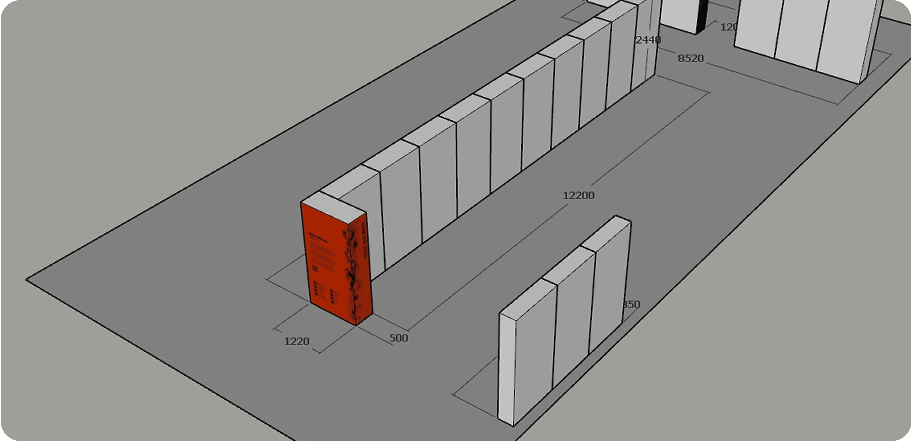
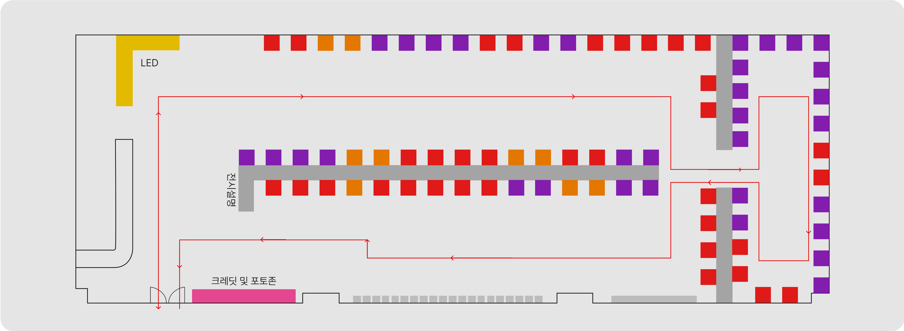

01 Showcase Design Leader
인덕대학교 2024 졸업전시에서 디스플레이 디자인팀에 팀장을 맡아서 디스플레이 기획을 주제적으로 안아서 진행했습니다.
3학년 졸업생 약 60명의 작품들을 효과적으로 전시하기 위해 전시기획 과정에서 교수 수와 학생의 의견을 최대한 수렴하고자 노력했습니다.
“ONE AND ALL”이라는 전시의 컨셉에 맞게 포스터의 방향유도물, 기획 디자인 등을 직접 진행했습니다.


